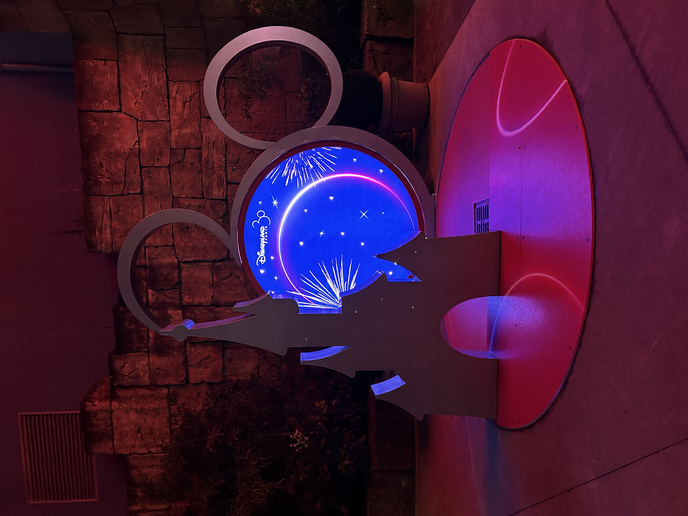

I’ll get straight to the point today as there is a lot to fit in. We arrive at Disney and welcomed by the midday parade with Chip and Dale waving down to me. We decided to follow the parade up to the end. Smiles all round for a happy start.
Over to the back of DiscoveryLand for Star Tours: The Adventure Continues. Very similar to the old one however a few new story lines and C3PO is the pilot. We got the Sequel Trilogy this time. A short walk over to Mickey’s PhilharMagic where Captain EO used to be. A massive improvement to say the least. A quick cartoon watch in Cafe Hyperton and ready to go. After that we were warmed up and ready to be ‘thrown about’- Eva. Helpful, HyperSpace Mountain was right next door. A few nerves from the group and Orlando-going-Aimee was not expecting to go upside down but lots of laughs coming off. DiscoveryLand complete… for now.
We started to get a bit peckish so found a pretzel stand with some mulled wine and wandered round FantasyLand. Unfortunately Small World was all boarded up and closed so we headed up to Pirates. ‘Didn’t get splashed enough’- Jessie but still very much enjoying by all. Nice walk through through Adventurland to Frontierland and Phantom Manor where we met Jack Skeleton dressed as Santa. This spirits messed with the ride twice but eventually let us go.
All very hungry about now but thought Indiana Jones and the Temple of Peril first was a better idea. ‘Clung to Jessie for dear life’- Aimee. Ready to eat we found a small pizza bar with mickey shaped pizza, very Disney. It had started to get dark so we aimed back for the entrance for buzz. Me and Eva decided the queue was too long so went and got a drink and took another flight on Star Tour while Aimee and Jessie rode Buzz Lighthears Laser Blast. We met back up and tried to fit in one more ride before the show however the back of the park was closing up so we decided to walk down main street through the shops.
I’m going to attempt to explain this but no words can describe the amazement of the final show as most of you know. It was split up in to 3 parts over about an hour. It started with tree turning on. All of Main Street went dark and the tree started to sparkle. In one blast the tree became a beacon of light shining down the street followed by room too snow machines showering down on us below. A short break as people gathered ready for D-Light. I won’t go into to much detail incase you intend on going but a true Disney magic show, may have had a tear in my eye. Incredible. Finally the Disney Dreams!
The park went dark. The castle slowly lit up. Elegance at its finest. The crowd is silent anticipating the next move. And in comes Olaf singing In Summer. Perfect. The show continues with amazing lasers and firework. As the crowd begin to leave we sneak round the outside and shoot towards the exit with one last look down Main Street. The girls were a bit done at this point so went and got a coffee from the cinema while I went round the Village shopping, oh how the table turns. Back on the train and ready for bed with a quick take away and wine ready for our final day tomorrow.
P.S. For those who are wondering, Big Thunder Mountain was closed most of the day so we were unable to ride the horrendous coaster.

